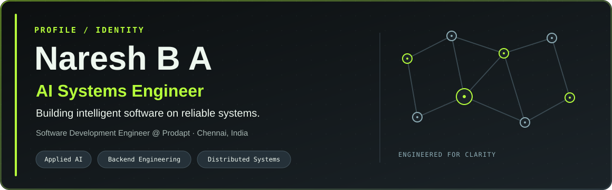
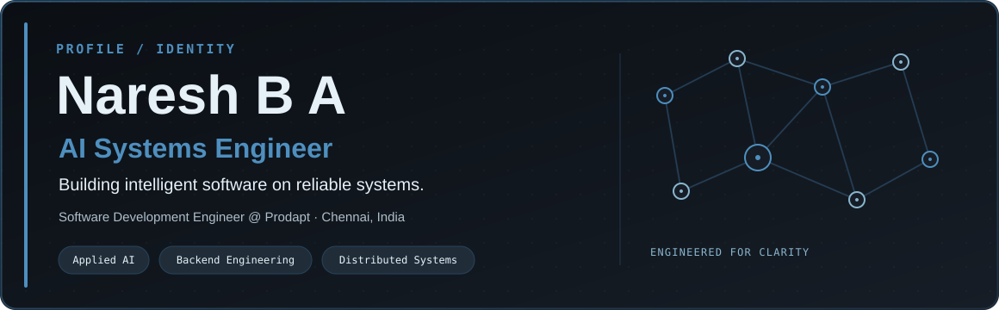
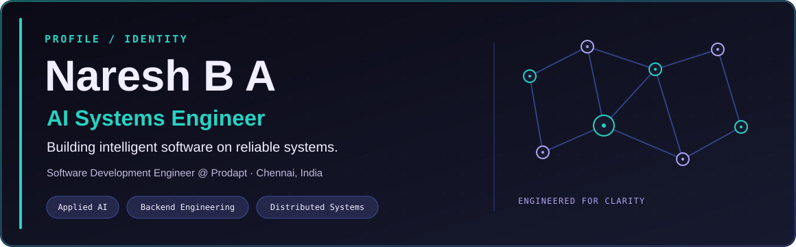
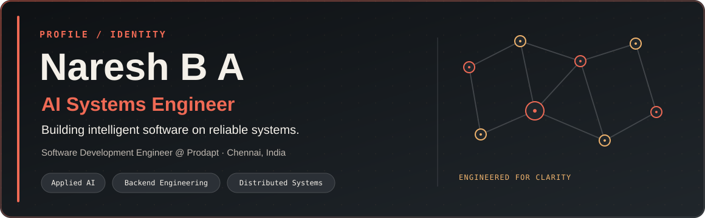

Titanium Hacker
Charcoal metal, steel gray, and selective lime accents.
#0C0F10#1B2328#42535C#B6FF3B#EEF7EF
Change the active theme in design/themes.json, or run python scripts/build.py --theme midnight-circuit --save-theme.
Charcoal metal, steel gray, and selective lime accents.
#0C0F10#1B2328#42535C#B6FF3B#EEF7EF
Graphite, steel blue, and quiet engineering detail.
#0B0F14#161D26#27435D#4E8FBF#E6F0F7
Deep indigo with teal and violet technical accents.
#0B0A16#171A2F#3B4D9A#27D3C3#F1EEFF
Dark mineral panels with warm vermilion and amber.
#0E1114#20262B#4A4E52#F06A55#F4F0E9